| 1 | 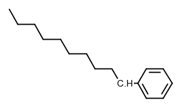 + 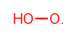 | = | 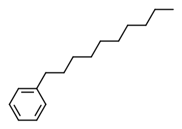 + 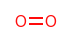 | 3e+11, 0, 0 |
| Disproportionation estimate: (Average of: (Y_rad O_Orad)) O_Orad C_rad/H/OneDeC | ||||
| 2 | + | = | 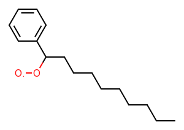 | 7.5e+12, 0, 0 |
| R_Addition_MultipleBond estimate: (Average of: (O2d C_sec_rad)) O2d C_rad/H/OneDeC | ||||
| 3 | + | = | 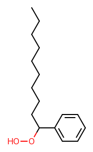 | 1.6e+13, -0.15, 0.31 |
| R_Recombination estimate: (Average of: (Average of: (H_rad H_rad && Average of: (C_methyl C_methyl && Average of: (C_rad/H2/Cs C_rad/H2/Cs) && Average of: (C_rad/H/NonDeC C_rad/H/NonDeC) && Average of: (Average of: (C_rad/Cs3 C_rad/Cs3))) && Average of: (Cd_pri_rad Cd_pri_rad) && Cb_rad Cb_rad && Average of: (CO_pri_rad CO_pri_rad && Average of: (CO_rad/NonDe CO_rad/NonDe)) && Average of: (O_pri_rad O_pri_rad && Average of: (O_rad/NonDe O_rad/NonDe))))) C_rad/H/OneDeC O_rad/NonDe | ||||
| 4 | + | = | + | 3.2e+09, 0.95, 5.6 |
| H_Abstraction estimate: (Average of: (Average of: (C/H2/NonDeC O_pri_rad && Average of: (C/H2/NonDeC O_rad/NonDeC && C/H2/NonDeC O_rad/NonDeO)))) C/H2/OneDeC O_rad/NonDeO | ||||
| 5 | + | = | + | 1.8e+10, 0, -3.3 |
| Disproportionation estimate: (Average of: (O_sec_rad O_Orad)) O_rad/NonDeO O_Orad | ||||
| 6 | 2 | = | + 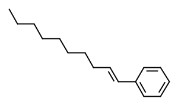 | 1e+14, -0.35, 0 |
| Disproportionation estimate: (Average of: (Average of: (C_rad/H/NonDeC C/H2/Nd_Csrad))) C_rad/H/OneDeC C/H2/Nd_Csrad | ||||
| 7 | + | = | + | 3.6e+11, 0, 0 |
| Disproportionation_O2d exact: O2d C/H2/Nd_Csrad | ||||
| 8 | + | = | + | 4.8e+13, 0, 0 |
| Disproportionation estimate: (Average of: (Average of: (O_pri_rad C/H2/Nd_Csrad))) O_rad/NonDeO C/H2/Nd_Csrad | ||||
| 9 | = | + | 8e+10, 0.56, 30 | |
| HO2_Elimination_from_PeroxyRadical estimate: (Average of: (Average of: (R2OO_HNd_2H && R2OO_HNd_HNd && R2OO_HNd_NdNd))) R2OO_HNd_HDe | ||||
| 10 | 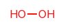 + | = | + | 3e+03, 2.4, 9.7 |
| H_Abstraction estimate: (Average of: (Average of: (O/H/NonDeC C_methyl && Average of: (O/H/NonDeC C_rad/H2/Cs) && Average of: (O/H/NonDeC C_rad/H/NonDeC) && Average of: (Average of: (O/H/NonDeC C_rad/Cs3)) && O/H/OneDe C_methyl))) C_rad/H/OneDeC O/H/NonDeO | ||||
| 11 | 2 | = | + | 1.8e+10, 0, -3.3 |
| Disproportionation estimate: (Average of: (O_sec_rad O_Orad)) O_rad/NonDeO O_Orad | ||||
| 12 | + | = | + | 4.8e+13, 0, 0 |
| Disproportionation estimate: (Average of: (Average of: (O_pri_rad C/H2/Nd_Csrad))) O_rad/NonDeO C/H2/Nd_Csrad | ||||
| 13 | + | = | + | 35, 3.4, -1.1 |
| H_Abstraction estimate: (Average of: (Average of: (O/H/NonDeC O_pri_rad))) O_rad/NonDeO O/H/NonDeO | ||||
| 14 | 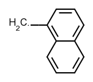 + | = | 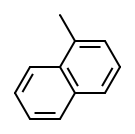 + | 3e+11, 0, 0 |
| Disproportionation estimate: (Average of: (Y_rad O_Orad)) O_Orad C_rad/H2/Cb | ||||
| 15 | + | = | + | 3e+03, 2.4, 9.7 |
| H_Abstraction estimate: (Average of: (Average of: (O/H/NonDeC C_methyl && Average of: (O/H/NonDeC C_rad/H2/Cs) && Average of: (O/H/NonDeC C_rad/H/NonDeC) && Average of: (Average of: (O/H/NonDeC C_rad/Cs3)) && O/H/OneDe C_methyl))) C_rad/H2/Cb O/H/NonDeO | ||||
| 16 | + | = | + | 3e+06, 1.9, 9.4 |
| H_Abstraction estimate: (Average of: (Average of: (C/H2/NonDeC C_methyl && Average of: (C/H2/NonDeC C_rad/H2/Cs && C/H2/NonDeC C_rad/H2/O) && Average of: (C/H2/NonDeC C_rad/H/NonDeC) && Average of: (Average of: (C/H2/NonDeC C_rad/Cs3)) && Average of: (C/H2/OneDeC C_methyl) && C/H2/TwoDe C_methyl))) C_rad/H2/Cb C/H2/OneDeC | ||||
| 17 | + | = | + | 1.5e+03, 2.4, 9.7 |
| H_Abstraction estimate: (Average of: (Average of: (O/H/NonDeC C_methyl && Average of: (O/H/NonDeC C_rad/H2/Cs) && Average of: (O/H/NonDeC C_rad/H/NonDeC) && Average of: (Average of: (O/H/NonDeC C_rad/Cs3)) && O/H/OneDe C_methyl))) C_rad/H2/Cb O/H/NonDeO | ||||
| 18 | + | = | + | 2e+12, 0, -0.043 |
| Disproportionation estimate: (Average of: (Average of: (C_rad/H2/Cs C/H2/Nd_Csrad && C_rad/H2/Cd C/H2/Nd_Csrad && C_rad/H2/O C/H2/Nd_Csrad))) C/H2/Nd_Csrad C_rad/H2/Cb | ||||
| 19 | + | = | 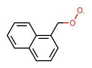 | 4.5e+12, 0, 0 |
| R_Addition_MultipleBond estimate: (Average of: (O2d C_pri_rad)) O2d C_rad/H2/Cb | ||||
| 20 | + | = | 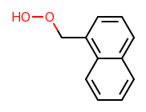 | 1.6e+13, -0.15, 0.31 |
| R_Recombination estimate: (Average of: (Average of: (H_rad H_rad && Average of: (C_methyl C_methyl && Average of: (C_rad/H2/Cs C_rad/H2/Cs) && Average of: (C_rad/H/NonDeC C_rad/H/NonDeC) && Average of: (Average of: (C_rad/Cs3 C_rad/Cs3))) && Average of: (Cd_pri_rad Cd_pri_rad) && Cb_rad Cb_rad && Average of: (CO_pri_rad CO_pri_rad && Average of: (CO_rad/NonDe CO_rad/NonDe)) && Average of: (O_pri_rad O_pri_rad && Average of: (O_rad/NonDe O_rad/NonDe))))) C_rad/H2/Cb O_rad/NonDe | ||||
| 21 | + | = | + | 1.5e+03, 2.4, 9.7 |
| H_Abstraction estimate: (Average of: (Average of: (O/H/NonDeC C_methyl && Average of: (O/H/NonDeC C_rad/H2/Cs) && Average of: (O/H/NonDeC C_rad/H/NonDeC) && Average of: (Average of: (O/H/NonDeC C_rad/Cs3)) && O/H/OneDe C_methyl))) C_rad/H2/Cb O/H/NonDeO | ||||
| 22 | + | = | + | 3.2e+09, 0.95, 5.6 |
| H_Abstraction estimate: (Average of: (Average of: (C/H2/NonDeC O_pri_rad && Average of: (C/H2/NonDeC O_rad/NonDeC && C/H2/NonDeC O_rad/NonDeO)))) C/H2/OneDeC O_rad/NonDeO | ||||
| 23 | + | = | + | 17, 3.4, -1.1 |
| H_Abstraction estimate: (Average of: (Average of: (O/H/NonDeC O_pri_rad))) O/H/NonDeO O_rad/NonDeO | ||||
| 24 | + | = | + | 35, 3.4, -1.1 |
| H_Abstraction estimate: (Average of: (Average of: (O/H/NonDeC O_pri_rad))) O/H/NonDeO O_rad/NonDeO | ||||
| 25 | + | = | + | 1.8e+10, 0, -3.3 |
| Disproportionation estimate: (Average of: (O_sec_rad O_Orad)) O_rad/NonDeO O_Orad | ||||
| 26 | + | = | + | 4.8e+13, 0, 0 |
| Disproportionation estimate: (Average of: (Average of: (O_pri_rad C/H2/Nd_Csrad))) O_rad/NonDeO C/H2/Nd_Csrad | ||||
| 27 | 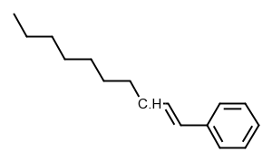 + | = | + | 3e+03, 2.4, 9.7 |
| H_Abstraction estimate: (Average of: (Average of: (O/H/NonDeC C_methyl && Average of: (O/H/NonDeC C_rad/H2/Cs) && Average of: (O/H/NonDeC C_rad/H/NonDeC) && Average of: (Average of: (O/H/NonDeC C_rad/Cs3)) && O/H/OneDe C_methyl))) C_rad/H/OneDeC O/H/NonDeO | ||||
| 28 | + | = | + | 3e+06, 1.9, 9.4 |
| H_Abstraction estimate: (Average of: (Average of: (C/H2/NonDeC C_methyl && Average of: (C/H2/NonDeC C_rad/H2/Cs && C/H2/NonDeC C_rad/H2/O) && Average of: (C/H2/NonDeC C_rad/H/NonDeC) && Average of: (Average of: (C/H2/NonDeC C_rad/Cs3)) && Average of: (C/H2/OneDeC C_methyl) && C/H2/TwoDe C_methyl))) C/H2/OneDeC C_rad/H/OneDeC | ||||
| 29 | + | = | + | 3.2e+09, 0.95, 5.6 |
| H_Abstraction estimate: (Average of: (Average of: (C/H2/NonDeC O_pri_rad && Average of: (C/H2/NonDeC O_rad/NonDeC && C/H2/NonDeC O_rad/NonDeO)))) C/H2/OneDeC O_rad/NonDeO | ||||
| 30 | + | = | + | 3e+11, 0, 0 |
| Disproportionation estimate: (Average of: (Disproportionation exact: )) O_Orad C_rad/H/OneDeC | ||||
| 31 | + | = | 2 | 1e+14, -0.35, 0 |
| Disproportionation estimate: (Average of: (Average of: (C_rad/H/NonDeC C/H2/Nd_Csrad))) C/H2/Nd_Csrad C_rad/H/OneDeC | ||||
| 32 | + | = | + | 3e+06, 1.9, 9.4 |
| H_Abstraction estimate: (Average of: (Average of: (C/H2/NonDeC C_methyl && Average of: (C/H2/NonDeC C_rad/H2/Cs && C/H2/NonDeC C_rad/H2/O) && Average of: (C/H2/NonDeC C_rad/H/NonDeC) && Average of: (Average of: (C/H2/NonDeC C_rad/Cs3)) && Average of: (C/H2/OneDeC C_methyl) && C/H2/TwoDe C_methyl))) C/H2/OneDeC C_rad/H2/Cb | ||||
| 33 | + | = | + | 3.2e+09, 0.95, 5.6 |
| H_Abstraction estimate: (Average of: (Average of: (C/H2/NonDeC O_pri_rad && Average of: (C/H2/NonDeC O_rad/NonDeC && C/H2/NonDeC O_rad/NonDeO)))) C/H2/OneDeC O_rad/NonDeO | ||||
| 34 | + | = | 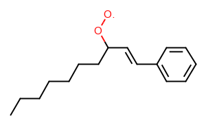 | 7.5e+12, 0, 0 |
| R_Addition_MultipleBond estimate: (Average of: (O2d C_sec_rad)) O2d C_rad/H/OneDeC | ||||
| 35 | + | = | 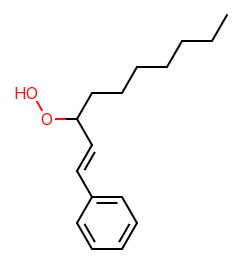 | 1.6e+13, -0.15, 0.31 |
| R_Recombination estimate: (Average of: (Average of: (H_rad H_rad && Average of: (C_methyl C_methyl && Average of: (C_rad/H2/Cs C_rad/H2/Cs) && Average of: (C_rad/H/NonDeC C_rad/H/NonDeC) && Average of: (Average of: (C_rad/Cs3 C_rad/Cs3))) && Average of: (Cd_pri_rad Cd_pri_rad) && Cb_rad Cb_rad && Average of: (CO_pri_rad CO_pri_rad && Average of: (CO_rad/NonDe CO_rad/NonDe)) && Average of: (O_pri_rad O_pri_rad && Average of: (O_rad/NonDe O_rad/NonDe))))) C_rad/H/OneDeC O_rad/NonDe | ||||
| 36 | + | = | + | 1.5e+03, 2.4, 9.7 |
| H_Abstraction estimate: (Average of: (Average of: (O/H/NonDeC C_methyl && Average of: (O/H/NonDeC C_rad/H2/Cs) && Average of: (O/H/NonDeC C_rad/H/NonDeC) && Average of: (Average of: (O/H/NonDeC C_rad/Cs3)) && O/H/OneDe C_methyl))) C_rad/H2/Cb O/H/NonDeO | ||||
| 37 | + | = | + | 3.2e+09, 0.95, 5.6 |
| H_Abstraction estimate: (Average of: (Average of: (C/H2/NonDeC O_pri_rad && Average of: (C/H2/NonDeC O_rad/NonDeC && C/H2/NonDeC O_rad/NonDeO)))) C/H2/OneDeC O_rad/NonDeO | ||||
| 38 | + | = | + | 17, 3.4, -1.1 |
| H_Abstraction estimate: (Average of: (Average of: (O/H/NonDeC O_pri_rad))) O/H/NonDeO O_rad/NonDeO | ||||
| 39 | + | = | + | 3.2e+09, 0.95, 5.6 |
| H_Abstraction estimate: (Average of: (Average of: (C/H2/NonDeC O_pri_rad && Average of: (C/H2/NonDeC O_rad/NonDeC && C/H2/NonDeC O_rad/NonDeO)))) C/H2/OneDeC O_rad/NonDeO | ||||
| 40 | + | = | + | 35, 3.4, -1.1 |
| H_Abstraction estimate: (Average of: (Average of: (O/H/NonDeC O_pri_rad))) O/H/NonDeO O_rad/NonDeO | ||||
| 41 | + | = | + | 17, 3.4, -1.1 |
| H_Abstraction estimate: (Average of: (Average of: (O/H/NonDeC O_pri_rad))) O/H/NonDeO O_rad/NonDeO | ||||
| 42 | + | = | + | 1.8e+10, 0, -3.3 |
| Disproportionation estimate: (Average of: (O_sec_rad O_Orad)) O_rad/NonDeO O_Orad | ||||
| 43 | + | = | + | 4.8e+13, 0, 0 |
| Disproportionation estimate: (Average of: (Average of: (O_pri_rad C/H2/Nd_Csrad))) O_rad/NonDeO C/H2/Nd_Csrad | ||||
| 44 | + | = | 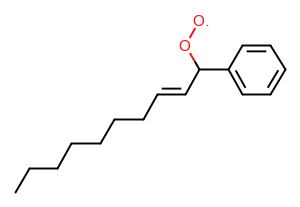 | 7.5e+12, 0, 0 |
| R_Addition_MultipleBond estimate: (Average of: (O2d C_sec_rad)) O2d C_rad/H/TwoDe | ||||
| 45 | + | = | 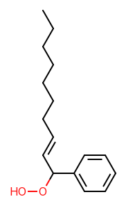 | 1.6e+13, -0.15, 0.31 |
| R_Recombination estimate: (Average of: (Average of: (H_rad H_rad && Average of: (C_methyl C_methyl && Average of: (C_rad/H2/Cs C_rad/H2/Cs) && Average of: (C_rad/H/NonDeC C_rad/H/NonDeC) && Average of: (Average of: (C_rad/Cs3 C_rad/Cs3))) && Average of: (Cd_pri_rad Cd_pri_rad) && Cb_rad Cb_rad && Average of: (CO_pri_rad CO_pri_rad && Average of: (CO_rad/NonDe CO_rad/NonDe)) && Average of: (O_pri_rad O_pri_rad && Average of: (O_rad/NonDe O_rad/NonDe))))) C_rad/H/TwoDe O_rad/NonDe | ||||
| 46 | + | = | + | 1.5e+03, 2.4, 9.7 |
| H_Abstraction estimate: (Average of: (Average of: (O/H/NonDeC C_methyl && Average of: (O/H/NonDeC C_rad/H2/Cs) && Average of: (O/H/NonDeC C_rad/H/NonDeC) && Average of: (Average of: (O/H/NonDeC C_rad/Cs3)) && O/H/OneDe C_methyl))) C_rad/H2/Cb O/H/NonDeO | ||||
| 47 | + | = | + | 3.2e+09, 0.95, 5.6 |
| H_Abstraction estimate: (Average of: (Average of: (C/H2/NonDeC O_pri_rad && Average of: (C/H2/NonDeC O_rad/NonDeC && C/H2/NonDeC O_rad/NonDeO)))) C/H2/OneDeC O_rad/NonDeO | ||||
| 48 | + | = | + | 17, 3.4, -1.1 |
| H_Abstraction estimate: (Average of: (Average of: (O/H/NonDeC O_pri_rad))) O/H/NonDeO O_rad/NonDeO | ||||
| 49 | + | = | + | 3.2e+09, 0.95, 5.6 |
| H_Abstraction estimate: (Average of: (Average of: (C/H2/NonDeC O_pri_rad && Average of: (C/H2/NonDeC O_rad/NonDeC && C/H2/NonDeC O_rad/NonDeO)))) C/H2/OneDeC O_rad/NonDeO | ||||
| 50 | + | = | + | 35, 3.4, -1.1 |
| H_Abstraction estimate: (Average of: (Average of: (O/H/NonDeC O_pri_rad))) O/H/NonDeO O_rad/NonDeO | ||||
| 51 | + | = | + | 17, 3.4, -1.1 |
| H_Abstraction estimate: (Average of: (Average of: (O/H/NonDeC O_pri_rad))) O/H/NonDeO O_rad/NonDeO | ||||
| 52 | + | = | + | 17, 3.4, -1.1 |
| H_Abstraction estimate: (Average of: (Average of: (O/H/NonDeC O_pri_rad))) O/H/NonDeO O_rad/NonDeO | ||||
| 53 | + | = | + | 1.8e+10, 0, -3.3 |
| Disproportionation estimate: (Average of: (O_sec_rad O_Orad)) O_rad/NonDeO O_Orad | ||||
| 54 | + | = | + | 4.8e+13, 0, 0 |
| Disproportionation estimate: (Average of: (Average of: (O_pri_rad C/H2/Nd_Csrad))) O_rad/NonDeO C/H2/Nd_Csrad | ||||